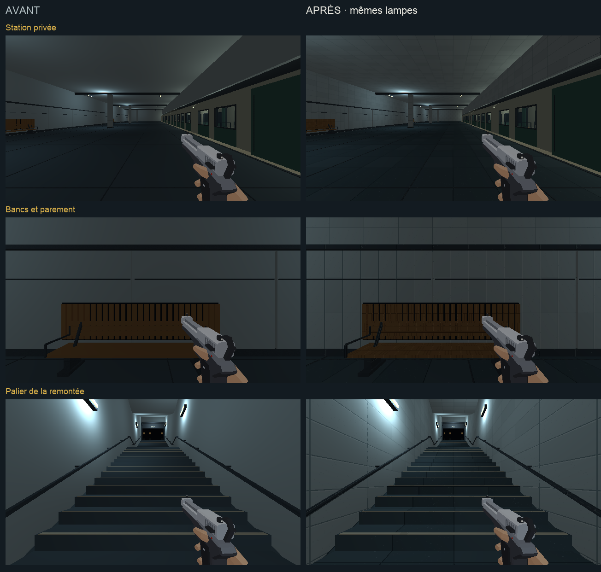
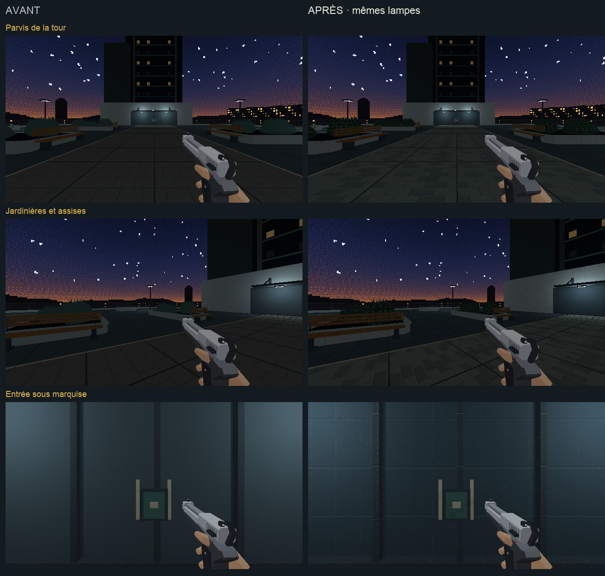

PROJET CASSANDRE · HARMONISATION · ÉTAPE 2
Station privée, remontée et parvis
Pierre froide, dalles gris-bleu et acier dans la continuité du métro. Le bois des bancs et le feuillage des jardins apportent leurs matières propres.
Étalon approuvé · Charte commune · Compte rendu de cette passe · Machinerie et aiguillage · Passe suivante : rames du métro
Chargement du métro…
La préparation actionne les commandes et effectue un voyage de 10 secondes dans cette revue. Les ennemis sont neutralisés et les trains suspendus pour comparer les surfaces. « Relancer les trains » rétablit leur passage. Clique dans le jeu pour parcourir les lieux ; Échap libère la souris.
Pose et équipement
En attente…
Avant et après
Avant à gauche, après à droite. Même pose demandée, même lumière et même équipement.

Parvis et entrée de la tour
